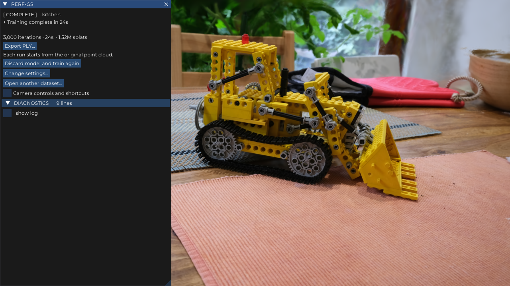

PERF-GS
3D Gaussian Splatting. Trained in seconds.
Stump trains for 9.21 seconds in this recording, followed by a free-camera orbit. From opening the scene to the trained result took 13.08 seconds.
Nine-scene Mip-NeRF 360 averages
- Ultrafast training loop
- 10.54 s
- RTX 4090 · 3,000 steps
- Quality reconstruction
- 27.89 dB
- RTX 4090 · 22.61 s
- Quality+ reconstruction
- 28.225 dB
- RTX 4080 · 216.40 s
Overview
The PERF-GS hub can run COLMAP on your photos to estimate camera poses and build a sparse point cloud, or open an existing COLMAP scene. Shared Slang shaders then train the Gaussians on Vulkan or Direct3D 12. Where a Gaussian covers fine image detail, the trainer can split it into smaller primitives.
Ultrafast samples a quarter of the pixel gradients. Balanced streams training images from system memory and averaged 2.81 GiB of GPU memory at loop end on the RTX 4090. Quality spends more updates refining the model. Quality+ continues until progress on training views levels off.
Reconstructions
For each scene, the same held-out photo ranked first in full-image PSNR for all three presets. The box marks the same detail in the photograph and both renders.


DSCF0912.JPG · Ultrafast 34.20 dB · Quality 34.99 dB
Drag a divider or use the arrow keys. Push the dividers together to compare the outer images.
RTX 4080, seed 42. Ultrafast and Balanced ran for 3,000 steps and Quality for 3,500. Scenes and photographs by Barron et al., CVPR 2022. Mip-NeRF 360 dataset ↗
Reconstructions in motion
Follow the same camera path through two trained models. Pause or scrub the video to inspect Ultrafast on the left and Balanced on the right at exactly the same viewpoint.
Benchmark results
Each of the nine Mip-NeRF 360 scenes contributes equally. Graphdeco evaluation covers 246 held-out views, at quarter resolution outdoors and half resolution indoors.
| GPU / preset | Steps | Train loop | PSNR ↑ | SSIM ↑ | VGG LPIPS ↓ | End VRAM |
|---|---|---|---|---|---|---|
| RTX 4090 24 GB | ||||||
| Ultrafast | 3,000 | 10.54 s | 27.12 dB | 0.7935 | 0.2564 | 5.29 GiB |
| Balanced | 3,000 | 15.92 s | 27.41 dB | 0.8143 | 0.2229 | 2.81 GiB |
| Quality | 3,500 | 22.61 s | 27.89 dB | 0.8285 | 0.1996 | 4.81 GiB |
| RTX 4080 16 GB | ||||||
| Ultrafast | 3,000 | 17.62 s | 27.13 dB | 0.7936 | 0.2567 | 5.29 GiB |
| Balanced | 3,000 | 25.97 s | 27.39 dB | 0.8143 | 0.2229 | 2.80 GiB |
| Quality | 3,500 | 32.44 s | 27.90 dB | 0.8286 | 0.1997 | 4.80 GiB |
| Quality+ | 17,536 avg. | 216.40 s | 28.225 dB | 0.8316 | 0.1907 | 4.80 GiB |
Headless Vulkan, seed 42. Training-loop timing excludes COLMAP reconstruction, loading, initialization, held-out evaluation and export. Quality+ includes its training-view convergence checks. VRAM is sampled at loop end.
4090 data ↓4080 data ↓Quality+ data ↓
Compare trainers on the same RTX 4080

The dashed line connects measured configurations that improve PSNR as more training time becomes available. Method settings and measurements ↗
Train your own scene
After installation, launch the hub and click Open dataset folder.... For photos, click Install reconstruction tools if prompted, then Reconstruct to COLMAP. An existing COLMAP scene opens directly.
python -m trainer.frontend.app --hubOnce the point cloud appears, choose a preset and click Start Training. Explore the result and save it with Export PLY....
Installation and quickstart ↗Ultrafast requires NVIDIA’s separately licensed research masks. Balanced is the default.

Citation
@software{scolari2026perfgs,
author = {Scolari, Stefano},
title = {{PERF-GS}},
year = {2026},
publisher = {Electronic Arts},
url = {https://github.com/electronicarts/perf-gs}
}